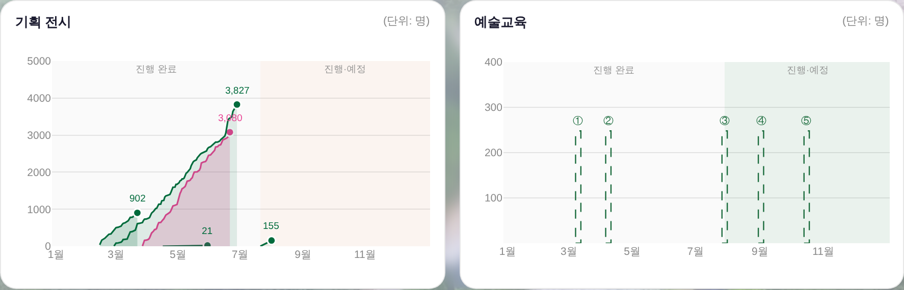

전시 색 캘린더 링킹 · 피크 동그라미 · 구획 경계(진행중 포함)
260805 운영자 지시 7건 + 후속 제외 1건 이행. 데이터·화면 조건은 전·후 동일(같은 목데이터로 렌더).
기획 전시 · 예술교육 (핵심 전후)
전 — 전시 전부 peach 한 색 · 피크 표식 없음 · y축 4,000에서 끊김 · 교육 값 축 없음 · 진행·예정 음영 = peach
후 — 캘린더 전시색(7층 초록 · 장도 분홍) · 피크 동그라미 · y축 5,000 · 교육 100~400 눈금 + 그린 음영
전시 색 = 캘린더 전시선과 같은 정본
색 SSOT = _EX_SPACE(캘린더 전시선 색) + 판정 _exLaneOf(이름, 장소) — 두 화면이 같은 함수를 지나므로 색이 갈릴 수 없습니다(값 복사 0 · 신규 hex 0).
| 전시 공간 | 캘린더 전시선 | 차트 곡선 |
|---|
| 7층 전시실 | #006B3C | 같음 |
| 장도 전시실 | #E84393 | 같음 |
| 야외 | var(--accent) | 같음(런타임 해석값) |
⚠ 캘린더 색은 전시 공간 단위입니다 — 2026은 (워크숍 제외 후) 4건 중 3건이 7층이라 같은 초록이 됩니다. 링킹을 지키면서 층을 가르기 위해 채움 알파를 순번별로 낮췄고(.20/.15/.11/.08 · 기틀 §3.5② alpha 변주 = 새 색 0), 개별 식별은 피크 동그라미·값 라벨·툴팁이 집니다.
제외 1건 — 「어린이미술전 워크숍」(운영자 판정)
운영자 260805 「5월에 시작한 21은 빼도 될듯. 대관인거같은데」 → 원본 실체 = 전시가 아니라 부대 워크숍(기간 표기 「2026. 4. 16(토) ~ 5. 30(토), 4회차」 · 일일보고도 종료일 1일치 21명뿐). 전시 곡선은 「기간 동안 차오르는 누계 관람」 축이라 회차 프로그램을 같은 축에 그리면 기준이 섞입니다. 빌더의 EXCLUDE 목록에 명시(원본 xlsx 무접촉 · 목록에서 지우고 재실행하면 복구) → 전시 곡선 5 → 4.
구획 경계 — 진행중 사업이 「진행·예정」에 포함
구판 경계 = 오늘 날짜 → 7/21 시작·11/1 종료인 진행중 전시가 오늘(8/5) 왼쪽에서 시작해 곡선 대부분이 「진행 완료」 음영에 깔렸습니다. 새 경계 = 아직 안 끝난 사업 중 가장 이른 시작일(_bizZoneCut) → 그 사업이 통째로 「진행·예정」에 들어갑니다.
| 차트 | 새 경계(실측) | 근거 |
|---|
| 기획 공연 | 2026-09-03 | 가장 이른 판매중 공연 시작일 |
| 기획 전시 | 2026-07-21 | 진행중 GS 전시 시작일 (inZone: true 확인) |
| 예술교육 | 2026-07-29 | 진행중 여름 예술캠프 시작일 |
기획 공연(경계 이동 반영)
보드 전체
그 밖
· 피크 동그라미: 누계 곡선이 단조 증가라 마지막 점 = 피크 — 종료 전시는 종료일의 최종, 진행중 전시는 지금까지의 누계. 테두리 = 카드 바탕(--surface-solid)이라 곡선이 겹쳐도 서로 먹지 않습니다.
· 전시 y축 5,000: 상한 = 최댓값 위 눈금 사다리 한 칸(_bizNiceStep(max×1.08) — 공연 축 중략이 쓰는 그 사다리). 3,827 → 5,000.
· 예술교육 100~400: 수강생 눈금을 미리 세웠습니다(실값이 들어오면 그 자에 그대로 얹힘). 게이지는 값이 없어 파선이고 높이는 전 항목 동일(248 = 눈금 사이)이라 값으로 읽히지 않습니다 — 툴팁도 「수강생 집계 전」을 계속 말합니다.
· 진행·예정 음영 색: 전시 = 강조색2(peach) · 교육 = 그린 · 공연 = 종전 peach(지시 없음).
· 게이트 = check_design ✓(raw hex 1578/1578 · 신규 색 0) · npm run check ✓ · smoke:layout ✓ · 1366×768 fit ✓.